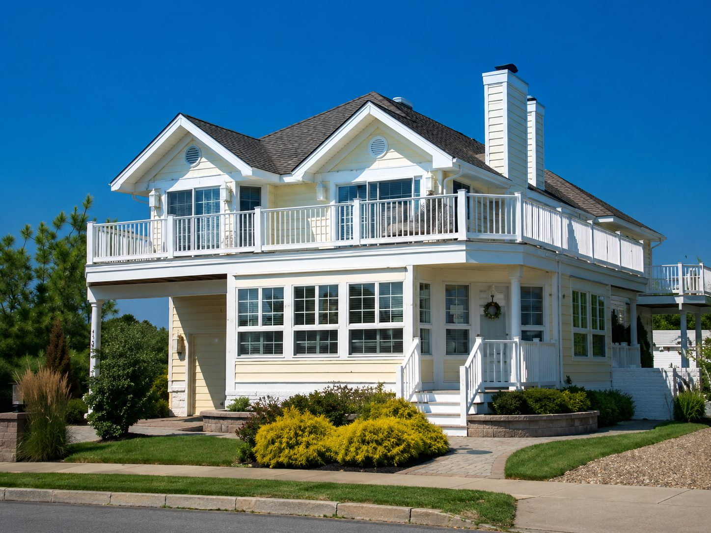
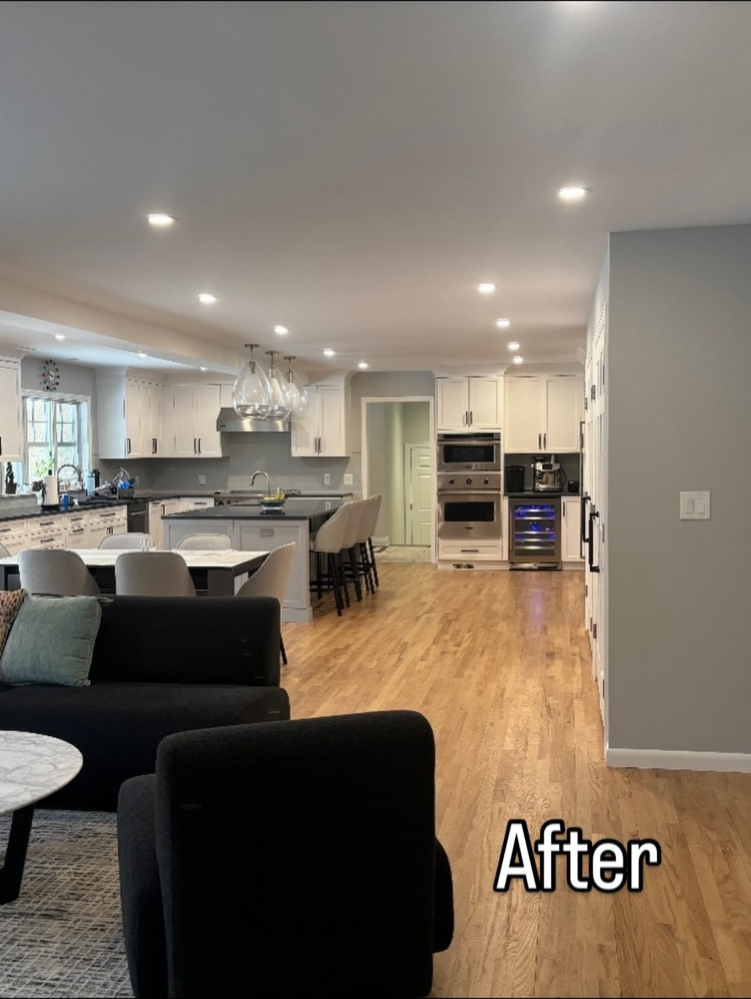
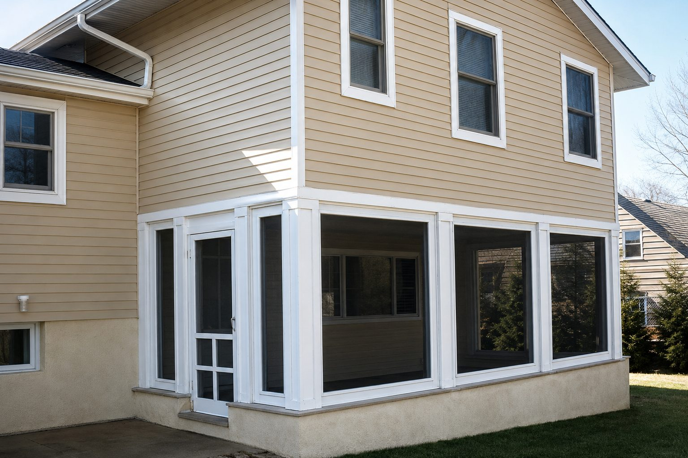
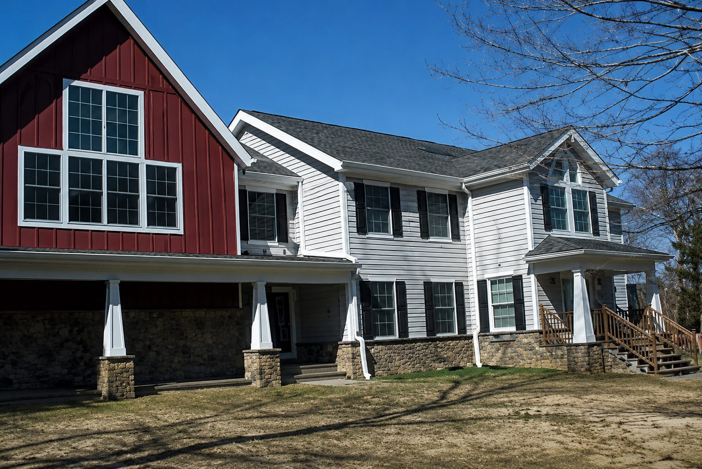
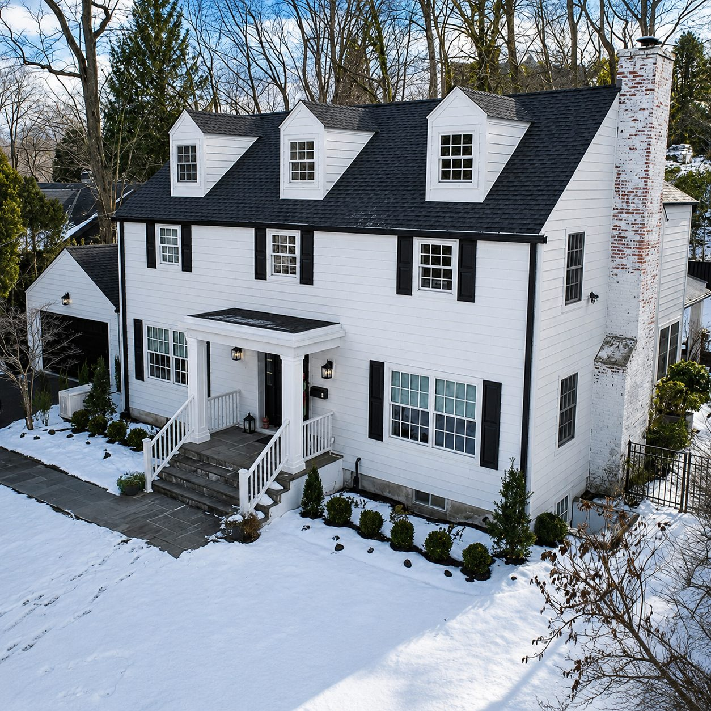
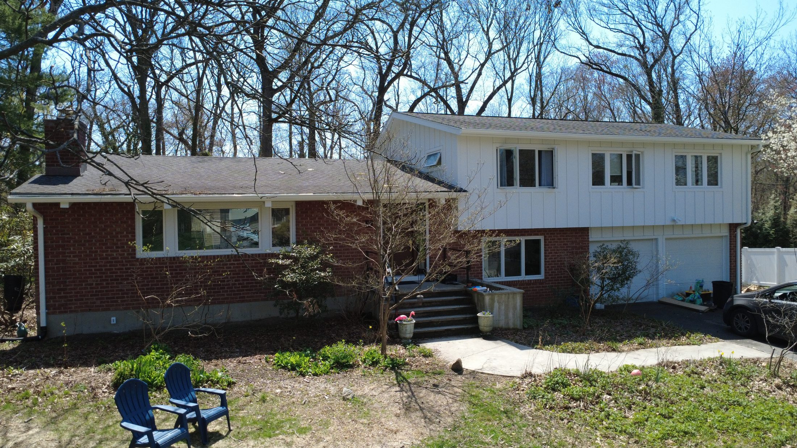

Carpentry-first thinking
Custom millwork, trim, finish carpentry, framing decisions, site-built solutions, and construction details are treated as part of one connected system.
Family-owned construction · Westchester · Putnam · Southern Connecticut
Diversified Plus Construction is a full-service residential and commercial contractor for homeowners and property owners who want one accountable team across planning, carpentry, construction, mechanical coordination, permits, finishes, and long-term exterior performance.
Not your average GC
Diversified Plus describes itself as a full-service contractor for residential and commercial projects, with work spanning carpentry, construction, plumbing, electrical, HVAC coordination, architectural assistance when permits are needed, and fine finishing work.
The company serves all of Westchester and Putnam counties and southern Connecticut, focusing on renovations, additions, kitchens, baths, decks, siding, exterior renovations, green building products, and owner-led project management.
What makes the company different
Custom millwork, trim, finish carpentry, framing decisions, site-built solutions, and construction details are treated as part of one connected system.
In-house management helps monitor budgets, sequence trades, arrange inspections, and keep the work moving toward on-time completion.
When a project requires building permits or architectural support, Diversified Plus helps connect planning, documentation, construction, and inspection steps.
The company highlights environmentally safer and eco-friendly products, including composite decking, fiber-cement siding, and low-maintenance exterior options.

Founder-led
Founder Jack Ricotta brings 20-plus years in the home building industry and specializes in custom millwork and trim. His role is not limited to a first meeting: he is described as the point man who personally oversees every aspect of the project.
That matters on complex scopes. Additions, kitchen remodels, siding replacements, decks, baths, and full renovations all depend on trade coordination, clean communication, and steady project control.
Service depth
Diversified Plus is strongest where projects touch multiple parts of the property: structure, systems, finishes, exteriors, and long-term maintenance.

How the work is controlled
A better construction experience starts with a plain-spoken project plan: what is being built, who is responsible, where decisions are needed, what inspections are required, and how finishes meet the existing home.
Review the property, goals, constraints, budget expectations, and sequence of work.
Align carpentry, construction, plumbing, electrical, HVAC, permits, materials, and subcontractor timing.
Track details, communicate progress, and guide the job through punch list and completion.
Local construction SEO
Diversified Plus service-area content should focus on Westchester County renovation contractor, Putnam County home addition contractor, southern Connecticut deck builder, kitchen remodeling in Westchester, bathroom renovation in Putnam County, siding replacement near southern Connecticut, and full-service general contractor for residential and commercial construction.
Kitchen renovations, siding replacement, additions, exterior remodeling, decks, and whole-home construction management.
Additions, basements, garage expansions, exterior upgrades, green building materials, and full renovation scopes.
Decking, outdoor living, bathrooms, kitchens, siding, trim work, project coordination, and construction management.
Community-minded
Diversified Plus presents itself as a philanthropic, community-minded company, with past giving connected to charities including the American Breast Cancer Association, Habitat for Humanity, and the Boy Scouts of America.
That part of the story matters because construction is personal. The work happens inside homes, around families, and across neighborhoods where trust and respect are as important as finish quality.
Built with field intelligence
Diversified Plus is positioned for projects where homeowners need more than a polished rendering or a single trade. The company’s strength is in seeing how each decision affects the next one: layout, framing, siding, roofing, waterproofing, trim, mechanical coordination, inspections, exterior protection, and final finish work.
That makes the company especially relevant for Westchester County homes with older framing conditions, Putnam County properties that need additions and outdoor space, and southern Connecticut renovations where the exterior envelope, interior finish level, and property value all need to move together.
Clear project definition before the schedule accelerates.
Carpentry, mechanicals, inspections, and finish work mapped together.
Durable selections chosen for real weather, maintenance, and daily use.


Owner-led communication
For clients, the advantage is not just that Diversified Plus can build. It is that the company can connect the early idea, the budget conversation, the permit reality, the subcontractor schedule, and the final detail review into one managed process.

Interior and exterior fluency
A kitchen project may affect flooring, electrical, lighting, windows, circulation, trim and exterior access. A siding project may reveal sheathing, drainage, flashing, window trim and roofline transitions. The company page now communicates that breadth instead of presenting a generic contractor story.
Material intelligence
In Westchester, Putnam and southern Connecticut, durability matters. Moisture, freeze-thaw cycles, shade, sun exposure, family use, resale value and long-term maintenance all influence the right product.
Siding, trim, roofing coordination and flashing decisions are treated as protection systems, not just curb appeal upgrades.
Decking, pool decks and pergolas are considered around traffic flow, railings, stairs, shade, drainage and low-maintenance ownership.
Cabinetry, flooring, millwork, mechanicals and lighting are coordinated so interior spaces feel designed rather than patched together.

Local service depth
Diversified Plus is framed around the way local homeowners search and make decisions: Westchester County general contractor, Putnam County addition contractor, southern Connecticut remodeling contractor, kitchen renovation company, bathroom remodeler, deck builder, siding installer, roofing coordination and green building materials.
Review goals, existing conditions, location, scope priorities and any permit considerations.
Connect budget, design direction, materials, trade sequencing and inspection needs.
Coordinate the field work with cleaner communication and fewer disconnected decisions.
Review final details, service notes, punch-list items and long-term ownership expectations.
A consistent resource section for homeowners reviewing planning & permit assistance, with practical notes on planning, sequencing, material selection, and finish quality.
 Planning
Planning
Scope, material lead times, access, approvals, and sequencing all shape whether a renovation feels controlled once construction starts.
Read Insight Structure
Structure
Rooflines, openings, utilities, trim transitions, and municipal review need to work together before finishes are selected.
Read Insight Finish
Finish
Reveal lines, lighting temperature, alignment, trim transitions, and material restraint are the details clients feel first.
Read InsightBring us your structural steel & home addition idea in Scarsdale or a nearby community. We will help translate the early vision into a clearer construction path.